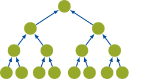
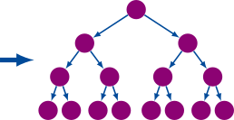
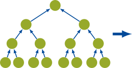
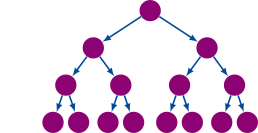

Plans: General Introduction
In 𝓗² methods, these plans describe how information moves through the tree hierarchy during matrix-vector products. It defines where values are aggregated, where translations are applied, and how results are disaggregated back to the required space.
The constructors galerkinplans and petrovplans produce compatible plan sets for both forward and transpose products.
Core Ingredients
Independent of Galerkin or Petrov formulation, plan construction uses:
- A tree representation for test and trial spaces.
- A translating-nodes iterator that separates near and far interactions.
- A node-selection rule (
aggregatenode) that marks translating nodes. - An aggregation mode that chooses the forward aggregation/disaggregation pattern.
Plan Families
Each constructed plan set contains these plan objects:
trialaggregationplantestdisaggregationplantestaggregationplantrialdisaggregationplanrelevantlevels
For Petrov planning, mintranslationlevel is additionally provided.
Aggregation Modes
The selected mode determines the forward plans. The transpose plans are then built automatically so transpose operations remain consistent.
AggregateMode
| AggregatePlan | DisaggregateTranslatePlan |
|---|---|
|
 |
 |
AggregateTranslateMode
| AggregateTranslatePlan | DisaggregatePlan |
|---|---|
|
 |
 |
The two modes produce different forward and adjoint plan assignments:
Forward plans:
| Mode | Trial-side forward plan (trialaggregationplan) | Test-side forward plan (testdisaggregationplan) |
|---|---|---|
AggregateMode() | AggregatePlan | DisaggregateTranslatePlan |
AggregateTranslateMode() | AggregateTranslatePlan | DisaggregatePlan |
Adjoint (transpose) plans:
| Mode | Test-side adjoint plan (testaggregationplan) | Trial-side adjoint plan (trialdisaggregationplan) |
|---|---|---|
AggregateMode() | AggregateTranslatePlan | DisaggregatePlan |
AggregateTranslateMode() | AggregatePlan | DisaggregateTranslatePlan |
Galerkin and Petrov Context
The main distinction is how test and trial trees are related:
- Galerkin: test tree and trial tree are the same.
- Petrov: test tree and trial tree are generally different.
For full construction workflows and runnable examples, see: